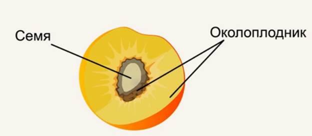
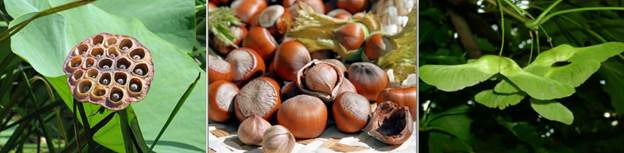
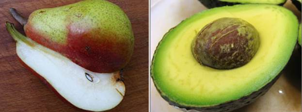
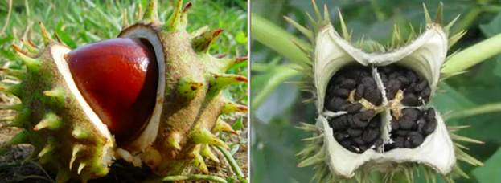
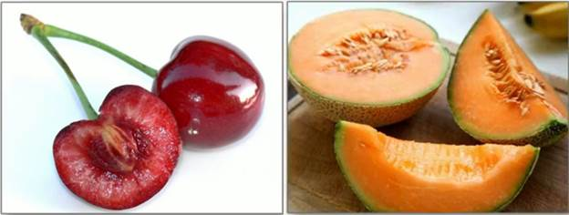
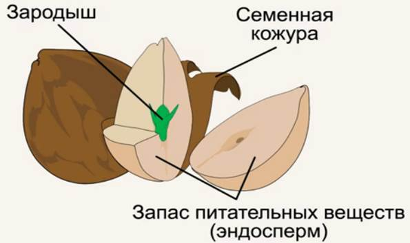
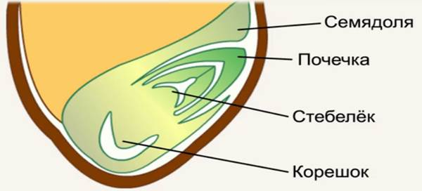
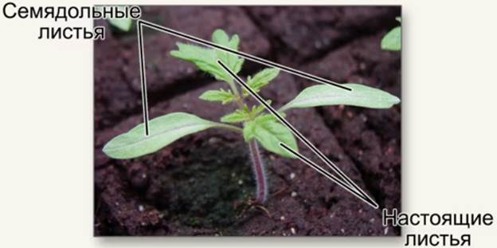
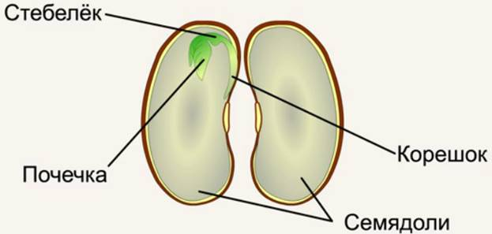
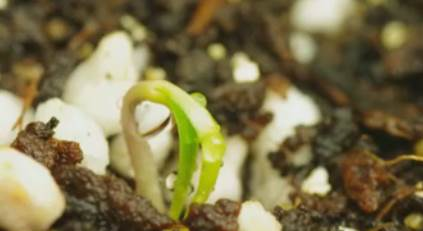

Плод – это один из самых характерных органов покрытосеменных растений. Он состоит из околоплодника и семян (Рис. 1).

Рис.1. Околоплодник и семя
Околоплодник, представляющий собой разросшуюся и сильно видоизмененную стенку завязи, обеспечивает формирование семян, защиту от неблагоприятных факторов, способствует их распространению. В околоплоднике выделяют три слоя: наружный — внеплодник, средний — межплодник, и внутренний — внутриплодник. Околоплодник может быть сухим (Рис. 2), а может быть и сочным (Рис. 3).

Рис. 2. Сухие околоплодники лотоса, лесного ореха и клена

Рис. 3. Сочные околоплодники груши и авокадо
Околоплодник может быть вскрывающимся (Рис. 4), то есть при созревании семени он особым образом растрескивается, раскрывается и дает возможность семенам выпасть из него.

Рис. 4. Вскрывающиеся околоплодники каштана и дурмана обыкновенного
В плоде может быть одно семя, как у вишни, сливы или абрикоса, а могут быть плоды и многосемянные, такие как дыня, томат или арбуз (Рис. 5).

Рис. 5. Односемянной околоплодник вишни и многосемянной околоплодник дыни
Снаружи семя окружено оболочкой – семенной кожурой, под которой находится зародыш будущего растения, окруженный питательными веществами, их запас называется эндосперм (Рис. 6).

Рис. 6. Строение семени
В эндосперме могут быть запасены жиры, ведь растительное масло, которое добывают из многих семян, – и есть запас питательных веществ для зародыша. В эндосперме запасают питательные вещества разнообразные растения, которые мы называем масличные (оливки, подсолнечник). В эндосперме могут запасаться углеводы и белки, это относится к злаковым растениям (пшеница, рожь).
У самого зародыша есть четыре части (Рис. 7).

Рис. 7. Строение семени, зерновка пшеницы
В целом зародыш построен из постоянно делящихся клеток: верхняя часть называется почечка – зачаток будущего стебля, ниже почечки располагается стебелек, из которого вырастет первая часть стебля, еще ниже находится корешок, который прорастает первым. Корешок дает начало всем корням будущего растения. От стебелька отходят особые выросты, они называются семядоли, их может быть две или одна, они могут быть похожи на листья, это самые крупные части зародыша. Семядоли часто становятся первыми листьями молодого растения (Рис. 8).

Рис. 8. Рассада томата
Такое растение называется проростком. Семядоли не считаются настоящими листьями, это особые части зародыша.
У семени пшеницы семядоля только одна, она отгораживает зародыш от эндосперма. Бывает, что при формировании зародыша, он всасывает в себя весь эндосперм, и вокруг сформированного зародыша мы его не видим, он хранится в семядолях. Это мы можем наблюдать в желудях, в семенах гороха, фасоли (Рис. 9).

Рис. 9. Запас эндосперма в семядолях семени фасоли
Прорастание семян – это переход их от состояния покоя к вегетативному росту зародыша и формирующегося из него проростка. Для прорастания семян необходимо тепло, кислород и вода. Вода необходима в небольших количествах, от избытка воды семена пропадут. Прорастание идет по этапам: на первом вода должна проникнуть внутрь семени, под семенную кожуру. Питательные вещества у зародыша находятся в сухом состоянии, и вода способствует растворению питательных веществ для усвоения зародышем. Первым прорастает корешок, он начинает активнее всасывать воду, зародыш – еще активнее растворять эндосперм, и стебелек с почечкой пускаются в рост. Необходимо учитывать, что семя прорастает в плотной среде – почве, само семя состоит из образовательной ткани и стебелек с почечкой могут повредиться при прорастании, поэтому иногда зародыш изгибается и пробуривает почву изогнутым коленом (Рис. 10).

Рис. 10. Прорастание зародыша изогнутым коленом
Иногда первыми начинают прорастать семядоли, оборачивая собой нежную почечку и стебелек, пробуривая почву и становясь первыми листьями.
Не все семена пускаются в рост при благоприятных условиях, часть из них остается в почве и составляет семенной банк для дальнейшего их развития.
Мы рассмотрели строение плода и семени, условие, при котором семя прорастает, разнообразие плодов и семян.
Список литературы
1. Пасечник В.В. Биология 6 класс. Бактерии, грибы, растения. – Дрофа, 2011.
2. Корчагина В.А. Биология 6-7 классы. Растения, бактерии, грибы, лишайники. – 1993.
3. Пономарева И.Н., Корнилова О.А., Кучменко В.С. Биология 6 класс. – 2008.
Дополнительные рекомендованные ссылки на ресурсы сети Интернет
1. Интернет портал «Проект – Вся Биология» (Источник)
2. Интернет портал «Биоуроки» (Источник)
3. Интернет портал «Сад навсегда» (Источник)
4. Интернет портал «Биология в лицее» (Источник)
Домашнее задание
1. Какие бывают околоплодники?
2. Из каких частей состоит зародыш семени?
3. Как происходит прорастание семян?